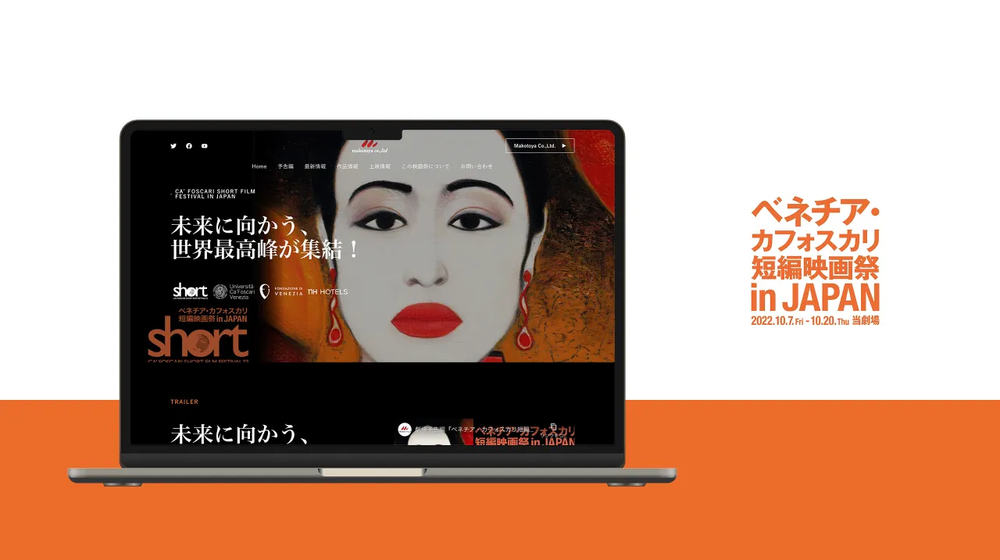

ベネチア・カフォスカリ短編映画祭 in JAPAN
ヴェネツィア・
進行中だった
- 担当範囲
- ワイヤーフレーム／
デザイン／ コーディング／ WordPress（Elementor）構築 - 制作期間
- 22日間
（ワイヤーフレーム5日・ デザイン10日・ コーディング7日） - 制作時期
- 2022年8月〜9月
PC
-
映画祭の
キービジュアルを 主役に。 キャッチコピーと ロゴは 左にまとめ、 ビジュアルの 印象を 邪魔しない 配置にしました。 -
上映作品は、
画像・ タイトル・ 作品データ・ あらすじの 並びを統一し、 本数が多くても 見比べやすく しています。 -
関係者の
コメントは、 背景に固定した 映画のスチールの 上にカードを重ね、 スクロールで 場面が 流れていくような 見せ方にしました。
SMARTPHONE
-
スマホでも
キービジュアルが 主役になるよう、 縦長の画面に 合わせて 組み替えています。 -
スマホでは
1列にして、 作品データと あらすじを 読みやすい 文字サイズで 並べています。